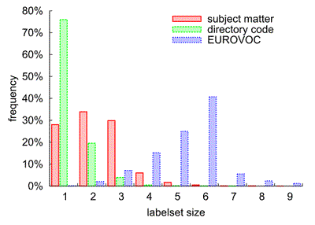
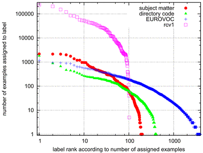
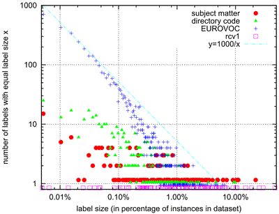

The EUR-Lex Dataset
Introduction
The EUR-Lex text collection is a collection of documents about European Union law. It contains many different types of documents, including treaties, legislation, case-law and legislative proposals, which are indexed according to several orthogonal categorization schemes to allow for multiple search facilities. The most important categorization is provided by the EUROVOC descriptors, which form a topic hierarchy with almost 4000 categories regarding different aspects of European law.
This document collection provides an excellent opportunity to study text classification techniques for several reasons:
- it contains multiple classifications of the same documents, making it possible to analyze the effects of different classification properties using the same underlying reference data without resorting to artificial or manipulated classifications,
- the overwhelming number of produced documents make the legal domain a very attractive field for employing supportive automated solutions and therefore a machine learning scenario in step with actual practice,
- the documents are available in several European languages and are hence very interesting e.g. for the wide field of multi- and cross-lingual text classification,
- and, finally, the data is freely accessible (at http://eur-lex.europa.eu/)
The database constitutes a very challenging multilabel scenario due to the high number of possible labels (up to 4000). A first step towards analyzing this database was done by applying multilabel classification techniques on three of its categorization schemes in the following work:
Eneldo Loza Mencía and Johannes
Fürnkranz.
Efficient multilabel classification algorithms for large-scale problems
in the legal domain.
In Semantic
Processing of Legal Texts, pages 192-215, Springer-Verlag, 2010
http://www.ke.tu-darmstadt.de/publications/papers/loza10eurlex.pdf
Previous shorter versions of this work used a version of the dataset with slightly more documents [2,3].
If you just want to download the dataset, go straight ahead to the files section.
EUR-Lex Repository
The EUR-Lex/CELEX (Communitatis Europeae LEX) Site provides a freely accessible repository for European Union law texts. The documents include the official Journal of the European Union, treaties, international agreements, legislation in force, legislation in preparation, case-law and parliamentary questions, treaties, international agreements, legislation in force, legislation in preparation, case-law and parliamentary questions. They are available in most of the languages of the EU, and in the HTML and PDF format, and in the HTML and PDF format. We retrieved the HTML versions with bibliographic notes recursively from all (non empty) documents in the English version of the Directory of Community legislation in force, in total 19,348 documents. Only documents related to secondary law (in contrast to primary law, the constitutional treaties of the European Union) and international agreements are included in this repository in this repository. The legal form of the included acts are mostly decisions (8,917 documents), regulations (5,706), directives (1,898) and agreements (1,597).
The bibliographic notes of the documents contain information such as dates of effect and validity and validity, authors, relationships to other documentsetc.relationships to other documents and classifications. The classifications include the assignment to several EUROVOC descriptors, directory codes and subject matters, hence all classifications are multilabel ones. EUROVOC is a multilingual thesaurus providing a controlled vocabulary for European Institutions for European Institutions. Documents in the documentation systems of the EU are indexed using this thesaurus. The directory codes are classes of the official classification hierarchy of the Directory of Community legislation in force. It contains 20 chapter headings with up to four sub-division levels.
Statistics
The high number of 3,956 different EUROVOC descriptors were identified in the retrieved documents, each document is associated to 5.31 descriptors on average. In contrast there are only 201 different subject matters appearing in the dataset, with a mean of 2.21 labels per document, and 410 different directory codes, with a label set size of on average 1.29. Note that for the directory codes we used only the assignment to the leaf category as the parent nodes can be deduced from the leaf node assignment.
An attempt of the visualization of the complex graph of the EUROVOC taxonomy with its many nodes and connections can be found in Fig. 1. The EUROVOC concepts and inter-relations were extracted into an ontology with a small tool from the official web pages. As it can be seen, the base structure is a hierarchy.Fig. 1: Visualization of the graph of the EUROVOC thesaurus (slightly modified and pruned) (click for zoom)
An overview of basic statistics of the different main views on the dataset are given in the following. Fig. 2 provides a visualization of the distribution of the labelset sizes (all figures from [8]). More details on the different directory code views are given further below.
|
|
labels | cardinality | density | labelsets |
| subject_matter | 201 | 2.21 | 1.10 | 2504 |
| DC_leaves | 410 | 1.29 | 0.32 | 1615 |
| EUROVOC | 3956 | 5.31 | 0.13 | 16467 |
the number of distinct label sets.

Fig. 2: Distribution of the labelset sizes for the three EUR-Lex dataset (click for pdf)
Previous dataset such as the Reuters rcv1 corpus were constructed in order to fulfill certain properties which are beneficial for classification [10]. E.g. the categories were carefully selected in order to not exceed too much the number of 100. In addition, it was tried to construct well balanced categories, in particular to include only few categories containing a small number of documents. EUR-Lex, in contrast, was not preprocessed in this respect.
This is reflected in Fig. 3, which visualizes the sizes of the labels, i.e. the number of examples associated to the individual labels, for the different EUR-Lex subsets as well as for rcv1. Apart from the obvious difference in the absolute sizes of the labels, we can observe that the sizes are more evenly distributed for the EUR-Lex datasets. The curves are straighter and evenly dense. The only few points below the number of 1000 and 100 examples for rcv1 in comparison to the EUR-Lex datasets demonstrates the distinct distributions and the artificial construction process of rcv1.

Fig. 3: Diagram of the sizes of the labels in number of associated examples for the EUR-Lex datasets and Reuters rcv1 for comparison (click for pdf)
This is confirmed in Fig. 4, which shows the frequencies of the label sizes. A point (x,y) in this diagram means that there exist y labels with the same number of associated examples x. We can clearly observe that the frequency of the label sizes for the EUR-Lex subsets follows a power law. This relationship between an event's attribute (the size of the labels) and their frequency can be universally observed, e.g. in natural processes, biology, physics, mathematics, social sciences, etc. The power law states that the frequency of an event follows as a power of an attribute of that event, i.e. in our case the size. It reflects the intuition that small sizes are measured very often, whereas extreme sizes happen rather infrequently. A popular example is the populations of cities in a country, which usually follow a power law. Another example is Zipf's law, which determines that the frequency of a word in a natural language corpus is inversely proportional to its frequency rank.

Fig. 4: Distribution of the sizes of the labels. The points of the different datasets on y=1 were slightly shifted in height for better visibility (click for pdf)
As the plot y=1000/x demonstrates, particularly the frequencies for EUROVOC match the Zipf-distribution quite well. Rubin et al. [10] point out that this power-law relation is natural for corpora in the real world: these datasets usually contain many rare labels and only a few frequent labels. rcv1, in contrast, does not follow the power law distribution, even if the label sizes are bucketed so that one rcv1 point matches one EUR-Lex point (not shown here). EUR-Lex, in particular the EUROVOC subset, is evidently a good representative of real world data and is hence very well suited for analyzing the behavior of multilabel learning algorithms in realistic scenarios, in particular in comparison to rcv1.
The Data
The EUR-Lex dataset was retrieved, processed, prepared and used in the following way:Retrieval
The number of 19940 documents was retrieved from the EUR-Lex/CELEX (Communitatis Europeae LEX) Site on 7th of July, 2006. The list is contained in the download script file eurlex_download_EN_NOT.sh.gz (change the extension to ".bat" for Windows). An archive containing the retrieved HTML-files is contained in eurlex_html_EN_NOT.zip.
-
Selection
The retrieved documents were parsed in order to extract category assignments and the body text. An internal ID was given for each document retrieved in this way, starting from one and enumerating the documents according to the alphabetic ordering of their file names.
A range of documents were excluded: 214 contained some error message e.g. that the document was not available in English (189), 316 contained an empty text field, 50 did not contain any relevant category information and 12 contained corrigendums which mostly referred to non-English translations (except one document) and were hence not available in English. Hence, the remaining number of documents is 19348.
A subset used in early experiments still contained 19596 documents [2,3], 248 documents were additionally removed after a review of the dataset [5,6]. Removed documents still obtained an ID so that the numbering of the document IDs in the dataset is not continuous.
A mapping of document ID to filename and CELEX ID together with a column indicating wether the document was removed is available in eurlex_ID_mappings.csv.gz. An explanation of the CELEX IDs and further useful information can be found in http://eur-lex.europa.eu/en/legis/avis.htm. The log file of the extraction and selection process is named eurlex_processing.log.gz. Note that two documents (no. 244 and 2736) were excluded manually).
-
Preprocessing
For the following steps the library of the Apache Lucene Project (Version 2.1.0) was used: the text was transformed to lower case (LowerCaseTokenizer), stop words from a standard English stop word list were removed (StopFilter), and finally the Porter stemmer algorithm was applied (PorterStemFilter).
The file eurlex_tokenstring.arff.gz contains the token strings in the ARFF format of Weka. The first attribute is the ID and the second is of type String and contains the converted list of tokens.
-
Class Assignments
The class assignments are saved in the TREC qrels format, as is done for the Reuters RCV1v2 collection. Each line codifies a document-class link in the format "<class_identifier> <document_ID> 1". As an example, the following listing shows document number 13286 belonging to the classes "Oils and Fats" and "Commercial Policy" and document 13287 assigned to "Agriculture" and again "Oils and Fats".
oils_and_fats 13286 1 commercial_policy 13286 1 agriculture 13287 1 oils_and_fats 13287 1
In total, three categorization types were extracted: the subject matter, directory code and EUROVOC descriptor assignment. Directory code classes are organized in a hierarchy of four levels. When a document is assigned to a class, it is also linked to all the parent classes. E.g. document 13286 belongs to "Oils and fats" (code 03.60.59.00), and therefore also to "Products subject to market organisation" (03.60.00.00) and "Agriculture" (03.00.00.00). A ".00" in the numeric code denotes the root node of this level, i.e. the parent node. Since the parent nodes can be deduced from the child nodes, we commonly only take into consideration the deepest class. The class assignments are contained in eurlex_id2class.zip in the following files:
- id2class_eurlex_subject_matter.qrels: assignments to subject matter
- id2class_eurlex_DC_leaves.qrels: deepest classes of the directory code assigned to documents without including the parent classes. Our example document 13286 would belong to 03.60.59.00
- id2class_eurlex_eurovoc.qrels: assignments to EUROVOC descriptor
- id2class_eurlex_DC_all.qrels: all class assignments, including parent nodes. Our example belongs to three classes, 3.60.59.x, 3.60.x.x, 3.x.x.x. ".x" in the class string denotes that this class level was pruned.
- id2class_eurlex_DC_l3.qrels: Only classes until level three in the class hierarchy are added. Our document is assigned to the same classes as in the previous mapping.
- id2class_eurlex_DC_l2.qrels: Only classes until level two are added. Document 13286 is assigned to 3.60.x.x and 3.x.x.x.
- id2class_eurlex_DC_l1.qrels: Only classes of the first level are added.
- id2class_eurlex_DC_leaves_l3.qrels: Only leaf classes until level three are considered, level four is pruned, i.e. level four classes are mapped to their parent class. Leaf classes of level one or two are still included. Note that this can result in class strings such as 1.2.0.x. Our example is assigned to 3.60.59.x.
- id2class_eurlex_DC_leaves_l2.qrels: Only leaf classes until level two are considered. Our example thus receives 3.60.x.x.
- id2class_eurlex_DC_leaves_l1.qrels: Only leaf classes until level two are considered. Corresponds to id2class_eurlex_DC_l1.qrels.
This results in 10 different datasets each one with 19348 instances and the following statistics. The first three views are the preferred ones.
Labels indicates the total number of classes, cardinality the average size of the label sets, density the average percentage of relevant classes per instance, and labelsets the number of distinct label sets.labels cardinality density labelsets subject_matter 201 2.21 1.10 2504 DC_leaves 410 1.29 0.32 1615 eurovoc 3956 5.31 0.13 16467 DC_all 441 3.75 0.85 1592 DC_l3 347 3.43 0.99 1373 DC_l2 129 2.40 1.86 715 DC_l1 20 1.17 5.87 189 DC_leaves_l3 318 1.28 0.40 1387 DC_leaves_l2 113 1.25 1.11 717 DC_leaves_l1 20 1.17 5.87 189 -
Cross Validation
The instances of eurlex_tokenstring.arff.gz were split randomly into 10 folds in order to perform Cross Validation. The resulting 10 train/test splits are contained in eurlex_tokenstring_CV10.zip.
-
Feature Vector Representation
Each train/test set pair was separately converted into the TF-IDF feature representation. In order to ensure that no information from the test set is included in the training set, the IDF statistics were only computed on the training sets. The conversion was done with the StringToWordVector class of Weka 3.5.5. Afterwards, the attributes were ordered according to their document frequency. The following command was used:
for (( i=1; $i <= 10; i++ )) do java -Xmx1000M -cp weka.jar weka.filters.unsupervised.attribute.StringToWordVector -R 2 -W 999999 -C -I -N 0 -i eurlex_tokenstring_CV${i}-10_train.arff -o temp_eurlex_CV${i}-10_train.arff -b -r eurlex_tokenstring_CV${i}-10_test.arff -s temp_eurlex_CV${i}-10_test.arff java -Xmx1000M -cp weka.jar:. weka.filters.supervised.attribute.AttributeSelection -E DocumentFrequencyAttributeEval -S "weka.attributeSelection.Ranker -T 0.0 -N -1" -i temp_eurlex_CV${i}-10_train.arff -o eurlex_CV${i}-10_train.arff -b -r temp_eurlex_CV${i}-10_test.arff -s eurlex_CV${i}-10_test.arff doneWe wrote an attribute evaluation class for Weka's AttributeSelection in order to sort the attributes by their document frequency. The source code is contained in DocumentFrequencyAttributeEval.java, the class file in DocumentFrequencyAttributeEval.class. The resulting data files are contained in eurlex_CV10.zip.
-
Feature Selection
We used feature selection in our experiments in order to reduce the computational costs, especially the memory consumption. A version of eurlex_CV10.zip with only the first 5000 features with respect to their document frequency is contained in eurlex_nA-5k_CV10.zip and was obtained by executing the following script:
for (( i=1; $i <= 10; i++ )) do java -Xmx1000M -cp weka.jar weka.filters.unsupervised.attribute.Remove -V -R first-5001 -i eurlex_CV${i}-10_train.arff -o eurlex_nA-5k_CV${i}-10_train.arff java -Xmx1000M -cp weka.jar weka.filters.unsupervised.attribute.Remove -V -R first-5001 -i eurlex_CV${i}-10_test.arff -o eurlex_nA-5k_CV${i}-10_test.arff donePlease refer to this dataset if you would like to directly compare to our results.
-
Mulan
Mulan is a library for multilabel classification developed by the Machine Learning and Knowledge Discovery Group at the Aristotle University of Thessaloniki. It uses a different data format, but also based on ARFF. The label information is coded as binary attributes at the end of the attribute list. In the newer versions an additional XML file indicates which are the label attributes. We do not provide the data directly in this format since this would result in too many different combinations. However, you can find the dataset from the previous section, which you should use for direct comparison, in the Mulan format in the extensive multilabel datasets collection of the MLKD group. We also provide you with a small Java (1.5) program in order to convert any Arff available from here into the Mulan format. The command line of the program (Convert2MulanArff.java,Convert2MulanArff.class) is as follows:
java -mx1000M -cp weka.jar:. Convert2MulanArff inputMLdata.arff id2class_mapping.qrels ouputMLdata.arff outputLabelStructure.xml
-
Summary of available files
eurlex_download_EN_NOT.sh.gz 117K Download script for the source documents of the EUR-Lex dataset. eurlex_html_EN_NOT.zip 161M Source documents in HTML format. english.stop 3.6K Standard English stop word list. eurlex_processing.log.gz 1.3M Log file of processing of the source documents. eurlex_ID_mappings.csv.gz 157K Table of mapping between file name, Celex-ID, intern document ID and whether a document was excluded. eurlex_id2class.zip 1.6M Mappings of documents to the different categorizations. You will need this for experimentation. eurlex_tokenstring.arff.gz 36M Contains the preprocessed (basically stemming) documents in the Arff file (token list format). Use this for further preprocessing, e.g. for different cross validation splits. eurlex_tokenstring_CV10.zip 382M Ten fold cross validation training and test splits used in the experiments in token list format. Use this e.g. for different term weighting or feature vector representation computations. DocumentFrequencyAttributeEval.class 4.3K Program that orders attributes according to their document frequency. DocumentFrequencyAttributeEval.java 7.3K Source code of DocumentFrequencyAttributeEval.class. eurlex_CV10.zip 269M Cross validation splits of TF-IDF representation of the documents. Use this e.g. for a different feature selection. eurlex_nA-5k_CV10.zip 218M Cross validation splits of TF-IDF representation of the documents with the first 5000 most frequent features selected, as used in the experiments. Use this for a direct comparison. The Mulan version is available from their homepage. Convert2MulanArff.class 5.3K Converts the indexed Arff format into the Mulan Arff format. Convert2MulanArff.java 4.6K Source code of Convert2MulanArff.class .
-
Terms of use
Concerning the original EUR-Lex documents and all its direct derivates containing text or other information of these documents, the data is as freely available as determined by the copyright notice of the EUR-Lex site. Additional data provided by the authors on the present site is freely available. Nevertheless, we would be glad if you would cite this site or [6] if you use in some way the EUR-Lex dataset. We would be also pleased to list your work in the references section.
References
The EUR-Lex dataset was analyzed and used in the following publications, partially using a previous, slightly different version. Download links can be found on the publications site of our group.
- [1]
- and , An Evaluation of Efficient Multilabel Classification Algorithms for Large-Scale Problems in the Legal Domain, in: Proceedings of the LWA 2007: Lernen - Wissen - Adaption, pages 126--132, 2007
- [2]
- and , An Evaluation of Efficient Multilabel Classification Algorithms for Large-Scale Problems in the Legal Domain, in: Proceedings of the LREC 2008 Workshop on Semantic Processing of Legal Texts, pages 23-32, 2008
- [3]
- and , Efficient Pairwise Multilabel Classification for Large-Scale Problems in the Legal Domain, in: Proceedings of the European Conference on Machine Learning and Principles and Practice of Knowledge Disocvery in Databases (ECML-PKDD-2008), Part II, pages 50--65, Springer, 2008
- [4]
- , and , Advances in Efficient Pairwise Multilabel Classification, TU Darmstadt, Knowledge Engineering Group, number TUD-KE-2008-06, 2008
- [5]
- , and , Efficient Voting Prediction for Pairwise Multilabel Classification,
in: Proceedings of the 17th European Symposium on Artificial Neural
Networks (ESANN 2009, Bruges, Belgium), pages 117--122, d-side
publications, 2009
- [6]
- and , Efficient Multilabel Classification Algorithms for Large-Scale Problems in the Legal Domain, in: Semantic Processing of Legal Texts -- Where the Language of Law Meets the Law of Language, pages 192-215, Springer-Verlag, 2010
- [7]
- , and , Efficient Voting Prediction for Pairwise Multilabel Classification (2010), in: Neurocomputing, 73:7-9(1164 - 1176)
- [8]
- , Efficient Pairwise Multilabel Classification, Dissertation, Technische Universität Darmstadt, Knowledge Engineering Group, 2012
Furthermore, the datasets have been used so far in the following works:
- [9]
- , Multilabel Classification in Parallel Tasks, in: Working Notes of the 2nd International Workshop on Learning from Multi-Label Data at ICML/COLT 2010, Haifa, Israel, pages 29-36, 2010
- [10]
- Timothy N. Rubin, America Chambers, Padhraic Smyth and Mark Steyvers, Statistical Topic Models for Multi-Label Document Classification (2012), in: Machine Learning, 88:1-2(157--208)
- [11]
- , , , and , Large-Scale Multi-label Text Classification - Revisiting Neural Networks, in: Proceedings of the European Conference on Machine Learning and Principles and Practice of Knowledge Discovery in Databases (ECML-PKDD-14), Part 2, pages 437--452, Springer Berlin Heidelberg, 2014

 +49 6151 16-21811
+49 6151 16-21811 +49 6151 16-
+49 6151 16-

 Drucken
Drucken Impressum
Impressum Sitemap
Sitemap Suche
Suche

{kind=link}